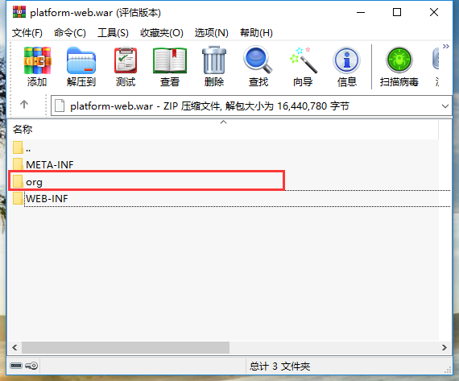
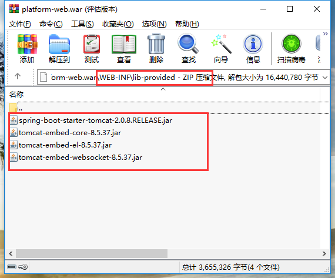
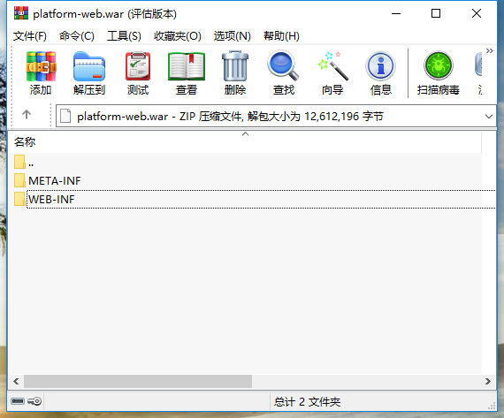
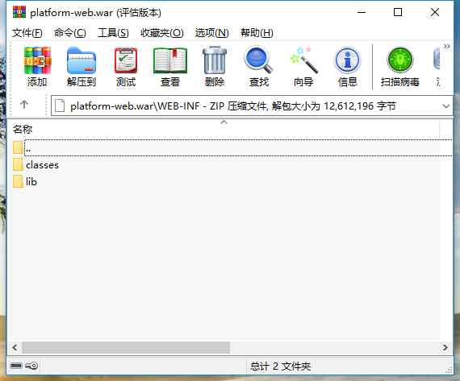

SpringBoot 有 jar 改成 war 部署
本文是基于 SpringBoot 2.0 以上版本。注意，SpringBoot 2.0 需要 Tomcat 8.5 以上版本。
默认情况下，SpringBoot 是打成 jar 包的，但是有人可能更喜欢打成 war 部署到 Tomcat 或其他 Servlet 容器中。
SpringBoot 有 jar 改成 war 大约有如下步骤：
- 修改 pom.xml 文件，将 jar 改成 war
- 排除内置的 Tomcat 容器，并添加依赖 spring-boot-starter-tomcat，使其 scope 为 provided。
- 启动类继承 SpringBootServletInitializer
- 打包部署
注意，你的应用可能是单应用，也可能是由多 Module 组合而成的。两种不同结构的应用配置稍有差别。
如果你的应用用到了 Maven，那么你的应用可能是分层搭建的，如，platform-parent，platform-base（公共代码），platform-dao，platform-service，platform-web。不同的层次代表不同的 Module，熟悉 Web 开发的同学应该了解这种结构。为了简化，此处仅以 platform-parent，platform-base，platform-web 为例，即 platform-web 包括 Dao 和 Service。
1. 修改 pom.xml 文件，将 jar 改成 war
<packaging>war</packaging>
如果是多 Module 的情况，只是将 platform-web 的 jar 改成 war 即可。
2. 排除内置的 Tomcat 容器，并添加依赖 spring-boot-starter-tomcat，使其 scope 为 provided。
修改 pom.xml 添加如下内容：
<!-- 排除内置的 Tomcat 容器 -->
<dependency>
<groupId>org.springframework.boot</groupId>
<artifactId>spring-boot-starter-web</artifactId>
<exclusions>
<exclusion>
<groupId>org.springframework.boot</groupId>
<artifactId>spring-boot-starter-tomcat</artifactId>
</exclusion>
</exclusions>
</dependency>
<!-- 添加 spring-boot-starter-tomcat 使其 scope 为 provided -->
<dependency>
<groupId>org.springframework.boot</groupId>
<artifactId>spring-boot-starter-tomcat</artifactId>
<scope>provided</scope>
</dependency>
如果是多 Module 的情况，排除内置的 Tomcat 容器，是在 platform-base 下面的 POM.xml 文件，而添加 spring-boot-starter-tomcat 依赖是在 platform-web 下面的 POM.xml 中。
3. 启动类继承 SpringBootServletInitializer
import org.springframework.boot.SpringApplication;
import org.springframework.boot.autoconfigure.SpringBootApplication;
import org.springframework.boot.builder.SpringApplicationBuilder;
import org.springframework.boot.web.support.SpringBootServletInitializer;
@SpringBootApplication
public class SpringBootWebApplication extends SpringBootServletInitializer {
// 相当于 WEB-INF/web.xml
@Override
protected SpringApplicationBuilder configure(SpringApplicationBuilder application){
return application.sources(SpringBootWebApplication.class);
}
public static void main(String[] args) throws Exception {
SpringApplication.run(SpringBootWebApplication.class, args);
}
}
Spring Boot 之所以能够打包成一个可执行的 jar 包，完全是依赖 Maven 的一个插件 spring-boot-maven-plugin。
如果将 Spring Boot 项目由 jar 包转换成 war包，转换成的 war 包既可以像传统项目那样，将 war 包放到 Tomcat 里面启动运行，也可以像可执行 jar 包一样，使用 java -jar platform-web.war 来启动项目，此时的 war 包既可以脱离 Tomcat 独立运行，又可以部署到 Tomcat 容器里面运行。
先说第二种情况，即生成的 war 包即可独立运行，又能像传统项目一样部署到 Tomcat 里面运行。
- 首先，启动类必须有 main 方法。
- 第二，就是 platform-web 必须有 spring-boot-maven-plugin 的插件。
插件配置如下：
<build>
<plugins>
<plugin>
<groupId>org.springframework.boot</groupId>
<artifactId>spring-boot-maven-plugin</artifactId>
<configuration>
<!-- 项目中的启动类 -->
<mainClass>com.javaliu.boot.App</mainClass>
</configuration>
</plugin>
</plugins>
</build>
此时打成 war 包的文件结构如图：


由图可知，可执行的 war 包拥有一些而外的类和内置的 Tomcat 容器。
如果是第一种情况，即传统的 war 项目，只能部署在 Tomcat 中运行。
- 首先，删除 spring-boot-maven-plugin 插件的配置。
- 第二，删除掉启动类的 main 方法。
此时打成的 war 包文件结构如下：


传统的 war 包没有额外的类文件以及内置的 Tomcat 容器。
由此可知，spring-boot-maven-plugin 插件的作用就是将 Spring Boot 项目打包成可执行的 jar 或者 war，并将 Tomcat 内置到应用中，从而实现独立部署。
4. 打包部署
根据不同的情况，打包部署的情况也不同。
可执行 war 包
- 使用 main 方法启动。
- 使用
spring-boot:run命令启动 - 使用传统 war 包的形式启动
传统 war 包
mvn clean package将打出的 war 文件，即 /target/xxxx-version.war 文件上传到指定的 tomcat 启动即可。
参考资料
https://www.mkyong.com/spring-boot/spring-boot-deploy-war-file-to-tomcat/